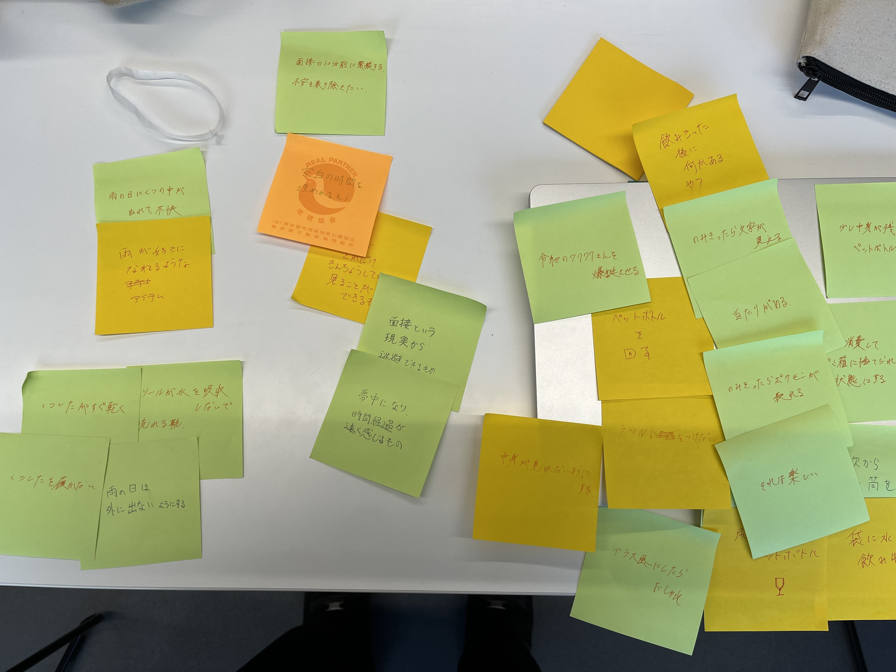
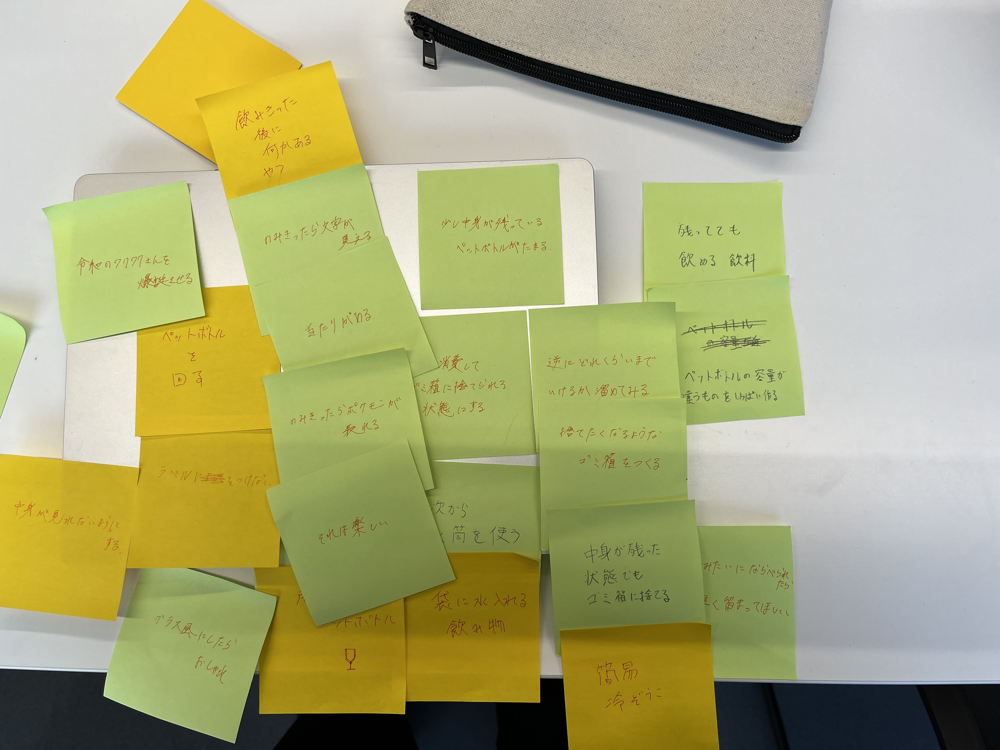

授業で書いたプログラム
const int DIR = 8;
const int STEP = 9;
void setup() {
pinMode(DIR, OUTPUT);
pinMode(STEP, OUTPUT);
digitalWrite(DIR, LOW);
digitalWrite(STEP, LOW);
Serial.begin(9600);
}
void loop() {
int val=0;
val=analogRead(1);
Serial.println(val);
delay(0);
for (int i=0; i = 50; i++)
if(200〈val){clockwise(1000000);
}
else{counter_clockwise(1000000);
}
}
void clockwise(int delaytime){
digitalWrite(DIR, HIGH);//HIGHは時計回り
digitalWrite(STEP, HIGH);
delayMicroseconds(delaytime);
digitalWrite(STEP, LOW);
delayMicroseconds(delaytime);
}
void counter_clockwise(int delaytime){
digitalWrite(DIR, LOW);//はLOWは反時計回り
digitalWrite(STEP, HIGH);
delayMicroseconds(delaytime);
digitalWrite(STEP, LOW);
delayMicroseconds(delaytime);
}
グループワーク
グループで出た問題
- 飲みかけのペットボトルが溜まる
- 面接10分前の不快感
- 雨の日に靴が濡れること
グループで出た案


個人的にはワイングラスの様なペットボトルの案がお気に入り。
見た目のわりに量が入ってなくて、形がお洒落だから。